Deerfield Investment Committee
The Spatial Data Engine.
An update from the operating company you backed — and a look at what is becoming possible in the next 12 months.
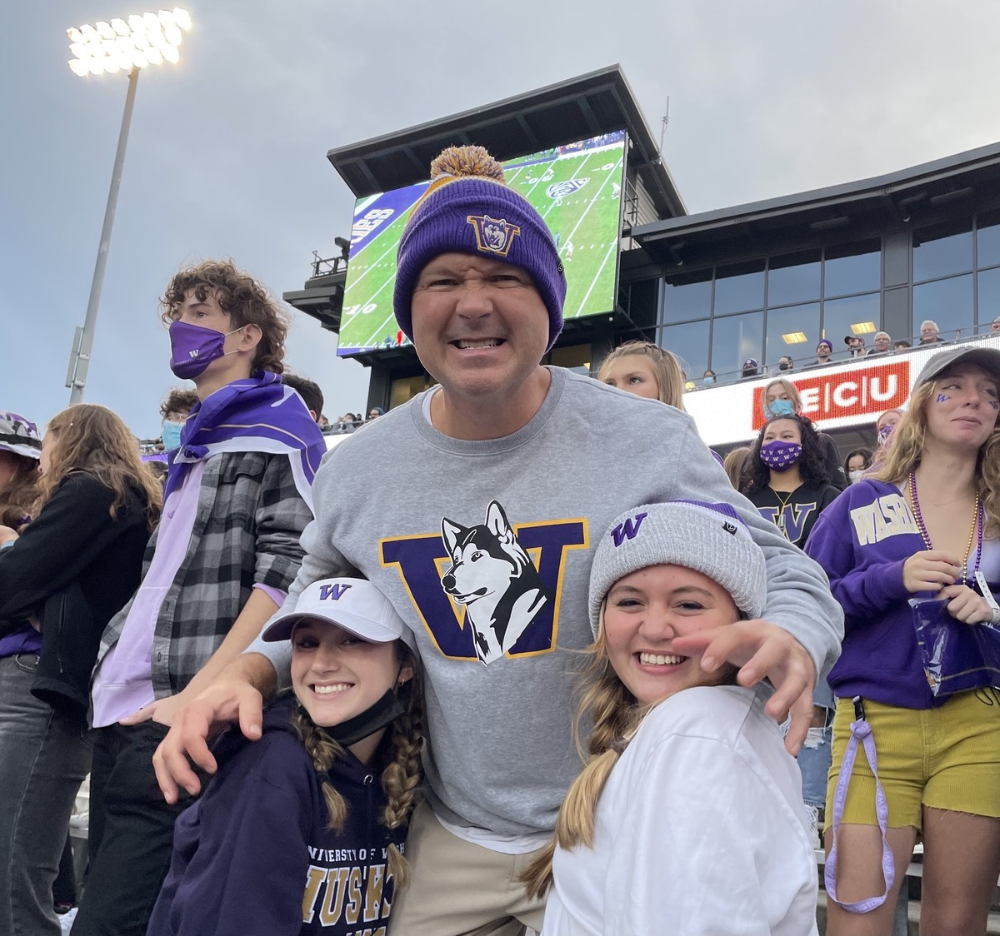
Every technology gets deployed where it moves a drug forward — companion diagnostics, patient stratification, response monitoring. Pharma is how value is captured.
Resources flow to technology that changes what happens at the bedside. Tools without a line to a patient are deprioritized.
Efficiency, quantitative detection, scale. Run the math first, design the experiment second, build the org around the bottleneck.
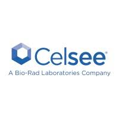
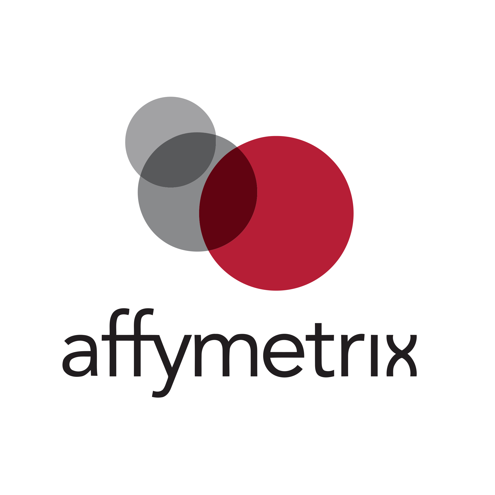
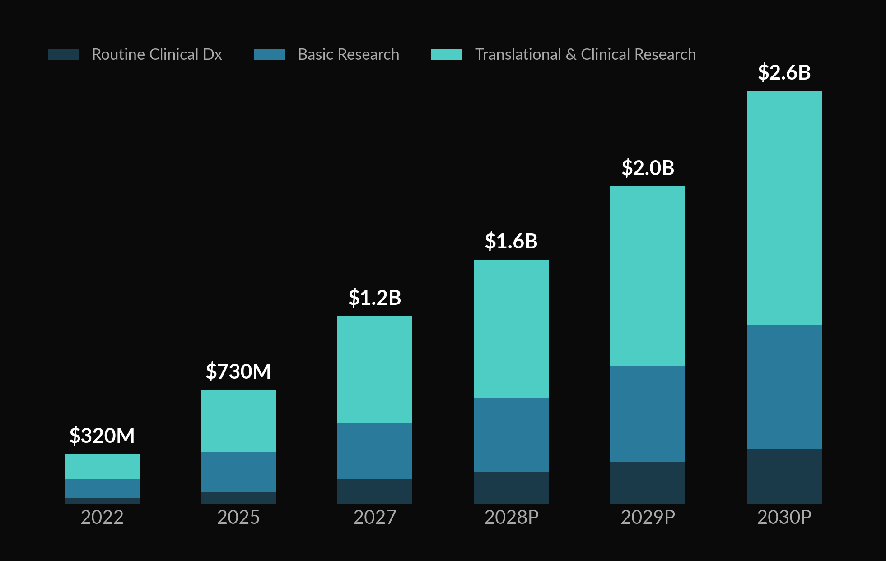
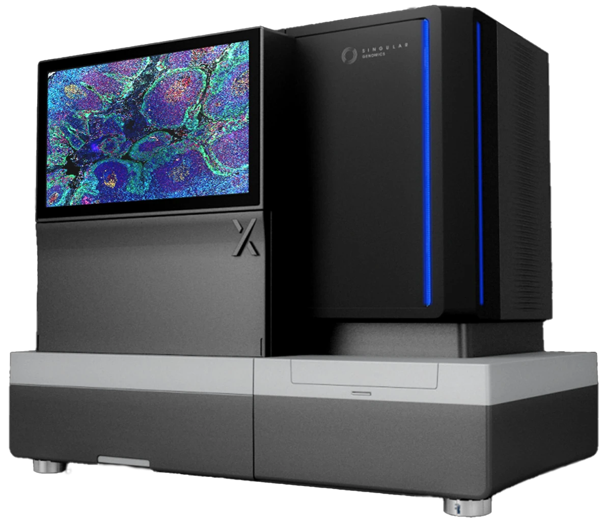
Platform & consumables footprint. The cohort-seeding layer. Tools-multiples ladder: 1–3× revenue.
Tri-modal consumables — recurring, per-sample, sticky. The franchise that funds the intelligence layer.
Virtual IHC · QCS · API + license layer. Data & AI multiples — where Foundation Medicine sold for $3B+.
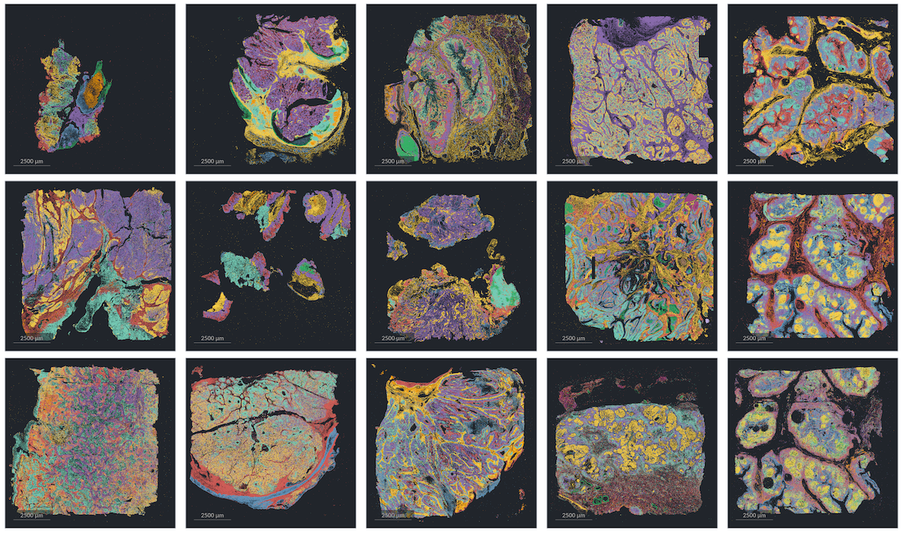
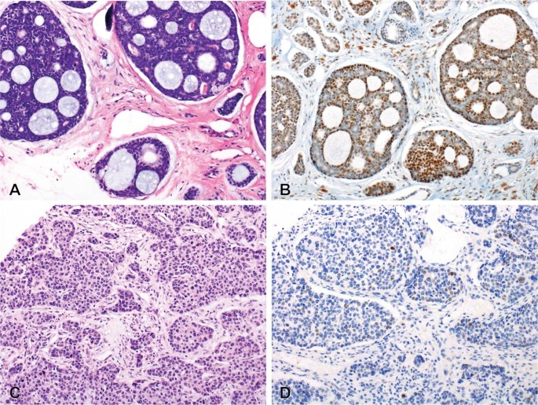
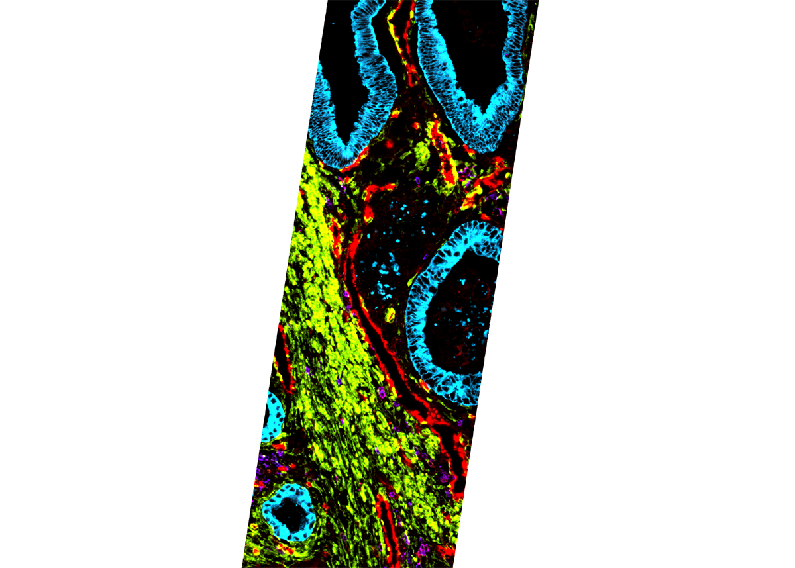
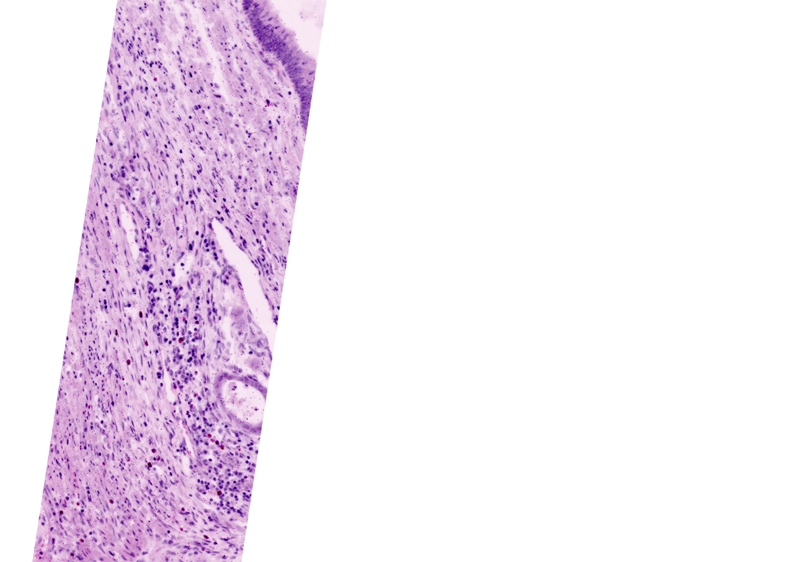
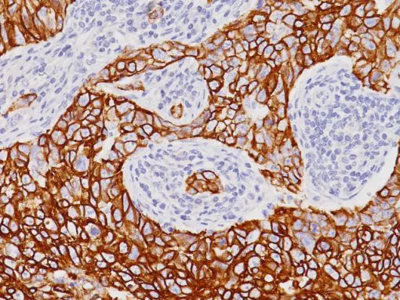
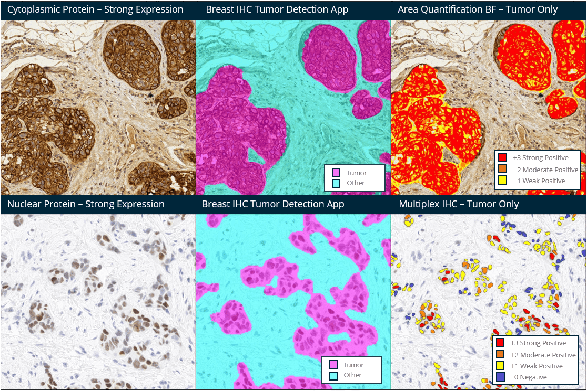
Patient selection + persistence readout — spatial proves the cells got where they were meant to go.
Quantitative target expression on the tumor cell — present + how much. Drives the patient call and the dose.
Co-localization of two targets in the same TME — a question only spatial can answer.
| Platform | Modality | Max plex | Resolution | Area / run | Run time | Samples / yr | Instrument $ | $ / run | Install base |
|---|---|---|---|---|---|---|---|---|---|
| Singular G4X | RNA + protein + fH&E | 500 RNA + 18 protein | Subcellular | 40 cm² · 128 samples | 5 days | ~9,300 (theor.) | $400K + $200K HPC | ~$9K · ~$280/sample | ~10 |
| 10x Atera | RNA WTA + targeted | 18,000 WTA + 3K | Single-cell (5 logs) | 20 cm² · 4 slides | ~7 days | 800 | <$500K | ~$8.8K · $2.2K/sample | just launched |
| Vizgen MERSCOPE Ultra | imaging | 1,000 RNA | Subcellular | 1.25–3 cm² / slide | 24–48 hr | ~155 | ~$300–400K | $3.8–4.4K / slide | ~107 |
| Bruker CosMx SMI | imaging | 19,000 WTX / 6K | Subcellular | 3–4 cm² / slide | 7–10 days | 36–52 | $295K | $1.85–6K | ~250 |
| Quanterix PhenoCycler-Fusion 2 | protein | 100+ | Single-cell | ~3–4 cm² whole-slide | 1–2 days | ~5,000 | ~$300–350K | $2–3K / slide | 1,359 (Mar '25) |
| Illumina Spatial Kit (2026) | WTA via NGS | WTA | 1 µm | 7.5 cm² | 1d + 24–48h seq | ~1–2K / sequencer | $0 incremental | ~$2.3–4.5K | 8,400+ sequencers |
| Element AVITI24 | NGS + cytoprofiling | WTA + protein | Single-cell | 96-well plate (cells) | <24 hr | n/d | $424K new · $150K up | ~$0.5–1.5K | 190+ |
"He who owns the highest-resolution biological data, owns the future of drug development."— Former Medical Director, Eli Lilly
Block libraries, biobanks, retrospective oncology cohorts. Close critical gaps (rare responders, rare tumor types).
Pharma + cancer-center customers pay us per sample. Revenue + data dual return.
Partner with leading translational institutions. We float data-gen cost; they bring samples + annotations.
Block archives that trade access for tech transfer + co-authored papers.
Four channels concurrently: gap-fill purchasing, 5–10 key center partnerships, services-revenue with exploratory drug-labeling, government biobanks for scale + standards.
Managed-cohort spatial atlas — breast, lung, colon × responder/non-responder × pre/post-treatment. Own the predictive APIs and the inputs into open-access foundation models.
Pathology AI, oncology Dx, pharma AI, and Big Tech all need measured spatial ground truth. We supply it — or vertically integrate and become them. Either path opens kitted businesses downstream (reflex → primary).